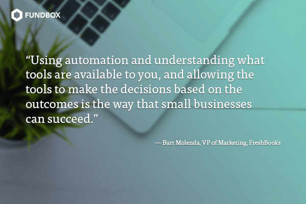
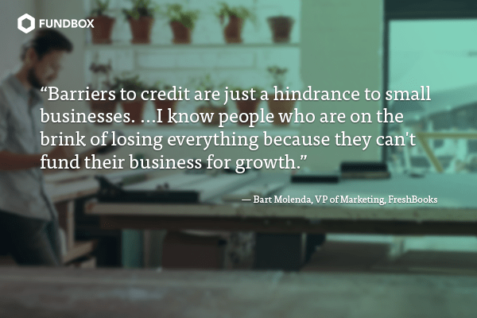

FreshBooks VP of Marketing on How Small Businesses Can Win
Bart Molenda has had a long and fascinating career in marketing, having contributed to the growth of such household names as eBay and Square. We recently chatted with him over video about his current role as Vice President of Marketing at FreshBooks. He shared his observations about small businesses, what he foresees will be huge shifts in how we interact with customers using mobile technology, and how he recommends brands can set themselves apart from the rest in a crowded market.
Note: This interview has been edited for length.

Fundbox: In just a few words, what’s your role at FreshBooks?
Bart Molenda: I’m the VP of Marketing at FreshBooks. I focus on acquisition in particular. What that means for us is helping connect our brand with self-employed freelance professionals around the world.
The small business market is incredibly fragmented. Have you observed this?
BM: Yes, the industry is very fragmented. We’re seeing new entrants trying to capture a small piece of the market. You saw this originally in things like display and programmatic advertising. I think fintech, or anything to do with linking finances or lending, has been historically controlled by just a few players.
Now the democratization of this category means it’s becoming more accessible to more people through technology. The result is heavy fragmentation, and we are not yet at the stage of seeing consolidation of the industry. If anything, more fragmentation is going to come, more startups will try and take a small piece of the market.
What kind of strategy do you use to break through the noise for FreshBooks?
BM: When trying to cut through the noise, it’s more important than ever to be niche and focus on a core group, not dilute the message with too many offerings or brand promises. In this world, it’s key to describe exactly what you are and to have a very well put together onramp for your core services. We definitely experienced that [when I was head of paid marketing at Square] as well. From a wide-angle payments radar, to several years later it becoming a real business solution for many different needs.
It’s hard to sell all of those products all at once. It can be confusing for customers. I’ve always believed in representing a core idea to your audience, a value proposition that resonates with them as their most critical and important business need.
When you talk about speaking to your market, are you talking about the whole market for cloud-based accounting solutions, since that’s what you provide at FreshBooks?
BM: Yes. That market now has many people who call themselves “solopreneurs.” They’re in a grey area. Are they individuals? Are they small businesses? Have they formalized the business? Or are they operating casually as an individual and therefore giving out signals as if they’re a consumer, rather than a business? There’s a very big segment of customers that aren’t represented in Dun & Bradstreet’s 26 million businesses. There’s a large group of people who are less obviously operating as businesses.
You’ve spoken previously about the importance of data and how marketing is transitioning from being an art-based department to a data-driven department. Is that something that you feel is in transition at FreshBooks, or is that something that’s been going on for a while?
BM: It’s been going on for a while, and every marketer and company who wants to stay in business for the long-term knows this and will continue to play this card. We’re always improving to try and do better, but that is certainly my focus in how we build teams and how we think about success is that it’s driven by– in the past in the Mad Men era it was driven by instinct and by creative people problem-solving, and information asymmetry. It’s no longer like that.
Increasingly, the minds of many will think better than the minds of a few. I certainly try and instill that [in my organization]. That’s changing more and more everywhere to enable that data and the clarity of how to make decisions off of data to happen in any part of the world.
I definitely agree: it’s better when your whole team is armed with the data to make decisions in their work rather than having data concentrated at the top. Do you think there are ways that smaller business owners could take that insight and implement it in their firms?
BM: You need to have a lot of well-thought-out processes in place to help you make decisions. Those processes should be set up so that you’re able to automate, replicate, and easily scale, because if you’re repeating the processes of making decisions, there’s agony in that in the form of wasted time and potential errors. Using automation and understanding what tools are available to you, and allowing the tools to make the decisions based on the outcomes is the way that small businesses can succeed.

That’s some good advice that applies to firms of all different sizes.
BM: One thing that sometimes falls off the list in the face of this push to democratize data, is experience. An example I’ve run into several times on this in different companies that I worked out is that, I would say, energetic people that don’t have experience or haven’t seen multiple things often believe they could build a new tool that would be better than something that’s already built. One example like this is, your typical analytics tool set, like Google Analytics, let’s say. A lot of individuals might think that they could build a better version of Google Analytics because they could customize it to their organization.
When you’re armed with a lot of people who are young and energetic, it’s hard for them to say, “Well, let’s take an existing structure and put in place and just use that even though it’s not 100% perfect.” If it’s 90%, it’s good enough. Good enough and quick can take you a long way.
Since FreshBooks is a cloud-based tool, you must have an incredible amount of data at your disposal. Could you talk about trends that you’re seeing among your small business customers?
BM: In terms of big changes, we have to recognize that it’s not just mobile-first anymore. You’ll likely be mobile-primary, like primary and only, and that a lot of businesses will just run their entire business off of their mobile phone or in a mobile version [of your software].
It’s like five years ago or eight years ago I told you that transportation services would be running off of the mobile phone. A few years ago, you might have said, no way! Obviously we are now in that world, where some businesses run only on mobile. I think that we’ll start seeing that more and more, even in B2B. Credit professionals, IT professionals, legal and trades folks.
Additionally, there’s more ways to think about input now, not just keyboard but also photos, voice recognition, voice searches and commands, and then there’s the AI for interpreting those commands. Those are all big trends.
Do you have a point of view on the millennial age group sea change and how that has changed expectations on things like UX and product delivery?
BM: Yes, I believe there is a large generational impact. This generation versus older generations will probably not only discover new things on their mobile phone, but primarily use their mobile phone versus other devices. In the future the technology will just be ubiquitous, in your contact lens or in whatever you want. How we will operate information systems will potentially change how we do business.
The other part of that thought too is that we are more and more locked into a few ecosystems. The majority of people’s day around the world is now spent between Instagram, Facebook, Google, and Amazon.
And if that’s where the lion’s share of time is spent, well, what does that mean? Does that require more integration within those products and in those those apps? Will you just be conducting yourself in your business within those apps as well? That’s what I’m really curious about: what’s the role of those few giants in tech, and how will the rest of us operate within them?
Talking about those giants in tech and how much power they really have over our experiences, it makes me think about going back to the fintech and credit world. At Fundbox, we talk internally about having empathy, and the responsibility that we feel that companies like ours should be an active force of good for trying to help level the playing field for underserved segments of the population, in our case small business owners. Do you have a point of view on that topic?
BM: We have a company mandate on community involvement and that’s speaking to our customers. Everyone has their own objectives around speaking to customers every quarter, as well as getting involved with the community. We make an active effort to be in the market, and we have dedicated volunteer days off per quarter that we’re encouraged to take.
The other thing that we do is, we invest a lot in customer service. I would say it’s a large differentiator in our business that we have no automatic voice response in our phone system. It’s ring and pick up. That is specifically set up in order to go above and beyond for our customers, and going above and beyond is helping them with the tool and helping them something that they might not be an expert in. We pride ourselves on taking the time and we have no call time targets or even really queues that we are managing there to speak to our customers in order to make their lives easier and to enable them to become more successful.
At FreshBooks, how do you use data science to improve your services or marketing?
BM: We use data a couple of ways. We use it for understanding and preventing churn. We use it for understanding the effectiveness of our marketing activities. We use it for understanding the performance of our product, how to display things to get the most value out of them, and how to keep customers coming back more often. I’d say those are like probably three strong tenants of data science in our business.
Our companies are working to bring about a change in how small businesses operate and transact. Can you comment on the changes that you’ve observed in the category of how small businesses manage their credit and their finances?
BM: One of my earlier gigs in payments was in Canada for the largest payment provider in the country. They have about just over between 40% and 50% reach of the Canadian market in payments, the largest provider in Canada.
When you’re that big, you can stipulate a lot of rules for your customers. Rules make it challenging for people to do business. If you’re putting a lot of obstacles and obstructions in running a small business, you’re preventing growth and you’re just not going to have a thriving economy.
For example, five or seven years ago, it was not that common to pay for coffee with a credit card, nor was it easy [for a restaurant owner] to get lending in order to buy the groceries that you need for tomorrow in order to cook that food and have it available.
You need money in order to pay people. Barriers to credit are just a hindrance to small businesses. I’ve known situations where people are trying to start business and get credit card processing and the banks think that it’s too high risk to offer this person credit card processing even though they are a tiny sandwich shop and you want them to take out equity out of their home or put their home up as collateral for this small business. That’s crazy talk. But it’s so common.
I know people who are on the brink of losing everything because they can’t fund their business for growth—to pay for the groceries that they need in order to cook the food that they will be serving the customers the next day. That lending, that entire credit ecosystem, is so critical. The providers that are doing that are life blood, critical for the country’s success.
In some ways, it has never been easier to start a business, but it’s also never been harder to scale a business. That’s what we’re seeing in our generation right now where 40 or 50 years ago in our parents and grandparents generation, it was very hard to start a business. Once you started it there wasn’t lot of competition. You could go and fund your business. Right now, the tide is turning.

Great observations. It’s really exciting to work at companies that are part of that change, since it’s such a huge economic driver that’s kind of trapped.
BM: Yes. Everybody’s got a hidden talent somewhere. There’s plenty of examples where someone has some basic carpentry knowledge or someone has a hobby for photography, or someone is a good interior designer… They can go off and work for themselves. Companies like Fundbox and FreshBooks enable this economy.
Ready for more?
Apply for funding and find out if you qualify today